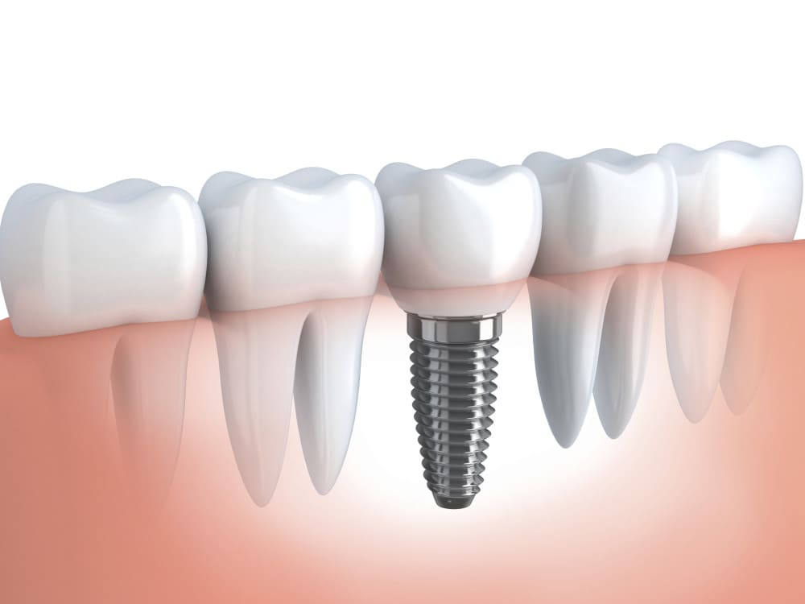
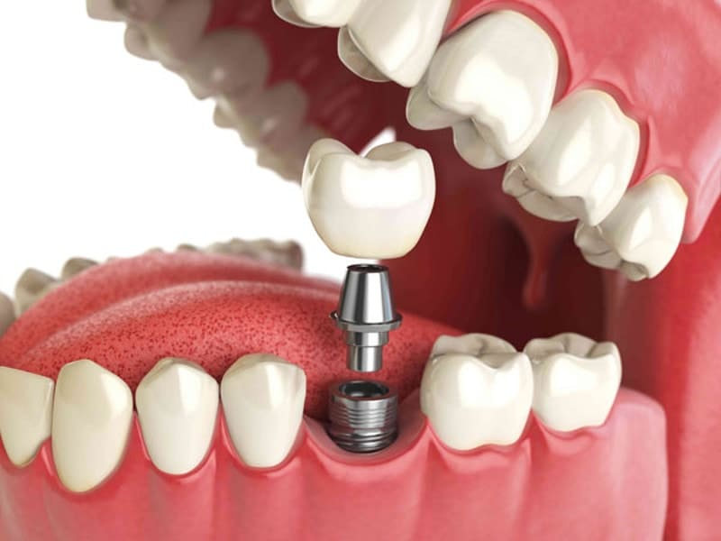
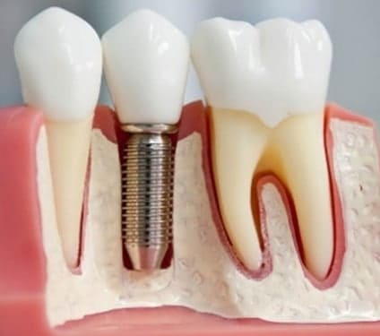

Зубні імпланти, імплантація зубів
Відновлення відсутнього з якихось причин зуба може проходити різними шляхами — металокерамічним мостом, знімним або бюгельним протезом. Але існує й інший варіант без препарування сусідніх зубів та незручних бюгельних протезів. Відновлення втраченого зуба за допомогою імплантації дозволяє зберегти сусідні зуби, а коронка настільки схожа на натуральний зуб, що дуже важко відрізнити.
Складові імпланта
Імплантат зуба складається з двох частин: внутрішньокісткової та коронкової. Сам імплантат встановлюється в кістку та носить функцію кореня зуба. Потім на нього кріплять абатмент, який буде культовою частиною для подальшої установки на нього коронки. Внутрішньокісткова частина – імплантат – досить міцно сидить у кістці та забезпечує первинну міцність конструкції. Абатмент кріпиться до імплантату за допомогою гвинта та 3х, 4х або шестигранних з'єднань, що унеможливлює обертання абатменту на імплантаті навколо своєї осі. Коронка до абатменту може кріпитися двома способами – цементуванням та гвинтом.
Переваги імплантації зубів:
1. Зубні імплантати відновлюють форму та функції відсутніх зубів.
2. Під час імплантації зуба сусідні зуби залишаються в цілості та безпеці – ніякого препарування.
3. При імплантації кількох зубів відпадає потреба у бюгелях та частково знімних протезах.
4. Імплантати дозволяють закріпити незнімні конструкції при повній втраті зубів.
5. За допомогою імплантатів можна закріпити існуючі знімні протези, що дасть кращу фіксацію, позбавить натирань і випадань протеза
6. У місці встановлення імплантату процес атрофії кістки припиняється, оскільки жувальне навантаження на кістку призводить до збільшення кровопостачання даної ділянки.
Показання та протипоказання до імплантації
Імплантація сьогодні є альтернативним методом протезування зубів за їх втрати. За результатами обстеження та діагностики лікар-імплантолог встановлює причину втрати зубів, історію захворювань, стан кісткової тканини та ясен, прикус, стан інших зубів. Ці заходи дозволяють виявити одне з таких показань до процедури:
• повна відсутність зубів на щелепі;
• поодинокий дефект – відсутність одного зуба;
• кінцевий дефект – відсутність одного чи кількох зубів наприкінці зубного ряду;
• включений дефект – відсутність одного або кількох зубів усередині зубного ряду.
Протипоказання до імплантації
⇓
Після з'ясування показань до імплантації зубів лікар-імплантолог має перейти до з'ясування протипоказань. Вони бувають абсолютними та відносними. Абсолютними протипоказаннями називають стан здоров'я або супутні захворювання, які можуть проявитися до, під час та після операції з імплантації зубів, а також призвести до скорочення терміну служби імплантатів.
До них відносяться
• тберкульоз;
• декомпенсовані захворювання серцево-судинної системи;
• хвороби крові (лейкози, таласемія, лімфогранулематоз, гемолітичні анемії); СНІД та венеричні захворювання.
• захворювання ендокринної системи (патології надниркових залоз та гіпофіза, важкі форми гіпо- та гіпертиреозу, цукровий діабет);
• злоякісні новоутворення;патології імунної системи (червоний вовчак, поліміозит, тяжкі інфекції, гіпоплазія тимусу та паращитовидних залоз);
• захворювання кісткової системи, що знижують репарацію кістки (остеопороз, уроджена остеопатія, остеонекроз, дисплазії);захворювання центральної та периферичної нервової системи (шизофренія, параноя, недоумство, психози, неврози, алкоголізм та наркоманія);
Відносні протипоказання (ті, які можна привести до норми):
• бруксизм;
• пародонтит;
• патологічний прикус;
• незадовільна гігієна ротової порожнини;
• передракові захворювання ротової порожнини;
• наявність металевих імплантів у інших органах;
• захворювання скронево-нижньощелепного суглоба.
Етапи імплантації зубів
Весь процес імплантації зубів можна розбити на три етапи: хірургічний, приживлюваний та ортопедичний. Кожен етап дуже важливий, тому опишемо їх докладніше
Перший етап – операція з імплантації
На цьому етапі лікар-імплантолог встановлює імплантат у щелепну кістку. Сама операція проходить у стерильних умовах, щоб не занести у ложі установки імплантату інфекцію. Якщо не дотримуватись правил стерильності, імплантат може бути відторгнутий організмом. Найчастіше операція проходить під місцевою анестезією і відчуттями проходить вона менш болісно, ніж видалення зуба. Але бувають випадки, коли потрібна серйозніша анестезія - седація або загальний наркоз. У кожному випадку лікар підбирає метод анестезії індивідуально. По ходу лікар створює так зване кісткове ложе за допомогою імплантологічного бору. Потім у ложі, що утворилося, загвинчується імплантат і зверху зашивається ясна.
Другий етап – приживлення імпланту
Така послідовність необхідна для того, щоб захистити імплантат та місце його встановлення від проникнення мікроорганізмів, що живуть у ротовій порожнині. У такому стані імплантат буде весь час приготування. Час приготування контролюється рентгенографічними дослідженнями. Мінімальний термін приживлення нижньої щелепи становить від трьох місяців, на верхній – від шести місяців. Після того як імплантати прижилися в кістки, ясна над ними розкривається і встановлюється формувач ясен на кожен імплантат, який за кілька днів, в середньому 10-14, надає ясна необхідну для протезування форму.
Третій етап – протезування
На останньому етапі виготовляються зубні протези на імплантати. Вид зубних протезів залежить від запланованого результату. Це може бути металокерамічна коронка з каркасом із звичайного сплаву або золотовмісного, безкаркасна коронка на оксиді алюмінію або циркону, може бути балкова конструкція або опора для умовно-знімного протеза за повної відсутності зубів. У будь-якому з наведених випадків для нас важлива естетична складова, а саме форма, колір і ступінь прозорості зубів для того, щоб відновлені зуби максимально відповідали справжнім.
Встановити зубні імланти у Києві за вигідною ціною ви можете у клініці «Імперал». Ми використовуємо лише якісні матеріали від провідних світових виробників та виконуємо протезування за останніми технологіями. Запишіться на прийом до лікаря зараз, щоб відновити красиву посмішку! Телефонуйте до нас!